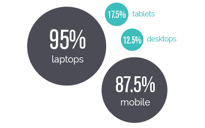

Determining Goals
To find out who would be using this app and what they would be looking for, I conducted a survey. My goal was to learn:
1) Who the target user was
2) How users typically browse for dining options
3) What motivates a user to want to attend a pop-up restaurant
4) What makes a successful browsing and booking experience
From the 42 responses received, I established some patterns and learned what were the obstacles and motivators.
Primary Users
The adventurous diners we are targeting are working millennials living in metropolitan areas. As heavy users of social media, millennials are also heavy consumers of experiences. Pop-up restaurants come at a higher price point, so we are targeting those in the middle-high to high income bracket.
Browsing on Devices
Users are browsing on their smartphones almost as often as they are on their laptops.
To reach as many users as possible, I decided to design a responsive web application rather than a native app. PopEats needed to be accessible by any device.

Food Interest
Majority of those surveyed are looking for new food experiences
Food Finding
Users currently find new dining options through word of mouth and mobile apps like Yelp most frequently. They also discover them through social media.
Online Resevations
Half of the survey respondents occasionally make reservations online. OpenTable is the most popular app used for reservations probably in part due to its integration to browsing platforms like Yelp.
Pop-Up Experiences
While only 25% of respondents have attended a pop-up restaurant, 95% said that they are interested in going to one. Our poll revealed that the following were the most important factors in deciding to make a reservation at a pop-up restaurant.